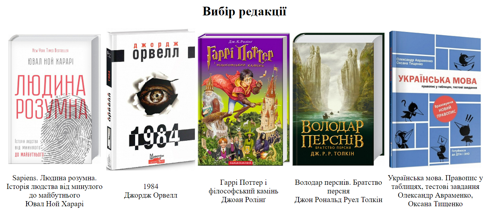

Бригада № 6 Студенти групи ІА-01: Перевознюк Юлія, Підвишенний
Володимир, Хомра Катерина
, Шевчук Тимур
СТРУКТУРА ДОКУМЕНТА
Предметна галузь: Онлайн бібліотека
Предметна галузь створювалась для зберігання інформації про книги. Даний застосунок допоможе швидко
обрати потрібну літературу. Користувач зможе переглянути найпопулярніші варіанти певного автора,
жанру, категорії, видавництва. Окрім цього,
буде можливість дізнатися думку інших стосовно обраної книги та подискутувати щодо сюжету.
Функціонал:
Користувач
Пошук книги за назвою, автором, жанром, видавництвом;
Переглядати інформацію про книги, а саме назву, автора, видавництво,
короткий опис, рік видання, фото;
Знайти посилання на офіційні книжкові магазини, де можна придбати книгу
за вигідними цінами;
Залишити оцінку;
Написати відгук-коментар;
Вхід в обліковий запис;
Реєстрація нового користувача;
Адміністратор
Те саме, що й користувач
Додавати/редагувати/видаляти інформацію про книги
Редагувати/видаляти коментарі
Доступ до інформації про зареєстрованих користувачів
Тема: Структура HTML-документа. Вибір предметної галузі. Робота з
посиланнями, таблицями, зображеннями, формами в HTML-документі.
Мета: придбати практичні навички роботи з HTML-документом,
таблицями,формами, зображеннями, посиланнями. Створити шаблон звітного HTML-документом для
відображення результатів роботи всіх лабораторних робіт.
<table
style="align-content: center; text-align: center; margin: 1% auto; font-size: 120%; width: 80%;">
<tr>
<th><img src="https://book-ye.com.ua/upload/resize_cache/iblock/80d/230_355_1/c1c82c9f_1eba_
11e7_80c5_000c29ae1566_31fc436a_4d1f_11e7_80c7_000c29ae1566.jpg"></th>
<th><img src="https://book-ye.com.ua/upload/resize_cache/iblock/fc2/230_355_1/cfa051db_74e0
_11e6_80be_000c29ae1566_b779de8b_ae3c_11eb_814a_0050568ef5e6.jpg"></th>
<th><img src="https://book-ye.com.ua/upload/resize_cache/iblock/914/230_355_1/329d4755_9f56
_11e6_80c0_000c29ae1566_ab9cf233_8b7f_11ea_8132_000c29ae1566.jpg"></th>
<th><img src="https://book-ye.com.ua/upload/resize_cache/iblock/86a/230_355_1/7dcde957_819f
_11e6_80c0_000c29ae1566_5327238b_2102_11e7_80c5_000c29ae1566.jpg"></th>
<th><img src="https://book-ye.com.ua/upload/resize_cache/iblock/d53/230_355_1/f38b2809_5eb4
_11ea_812b_000c29ae1566_d9d2c9e1_9bfe_11ea_8136_000c29ae1566.jpg"></th>
</tr>
<tr>
<td>Sapiens. Людина розумна. Історія людства від минулого до майбутнього <br> Ювал Ной
Харарі</td>
<td>1984 <br> Джордж Орвелл</td>
<td>Гаррі Поттер і філософський камінь<br> Джоан Ролінґ</td>
<td>Володар перснів. Братство персня<br> Джон Рональд Руел Толкін</td>
<td>Українська мова. Правопис у таблицях, тестові завдання<br> Олександр Авраменко, Оксана
Тищенко</td>
</tr>
</table>
Скриншот таблиці

Теорія:
Для додавання таблиці на веб-сторінку використовується тег
< table>
. Цей елемент служить контейнером для елементів, що визначають вміст таблиці. Будь-яка
таблиця складається з рядків і осередків, які задаються відповідно за допомогою тегів
< tr>
і
< td>
.
Тег
< form>
встановлює форму на веб-сторінці. Форма призначена для обміну даними між користувачем і
сервером. Область застосування форм не обмежена відправкою даних на сервер, за допомогою
клієнтських скриптів можна отримати доступ до
будь-якого елементу форми, змінювати його і застосовувати на власний розсуд.
Тег
< img>
призначений для відображення на веб-сторінці зображень в графічному форматі GIF, JPEG або
PNG. Адреса файлу з картинкою задається через атрибут src.
Висновок: у цій лабораторній ми вивчили та навчились застосовувати основні html-теги.
Обрали пердметну область, також постановили задачі та функціонал, який має виконувати наш сайт.
Написали код основної сторінки на, якій розмістили
таблицю, форму та декілька зображень.
СЕЛЕКТОРИ
Тема: КАСКАДНІ ТАБЛИЦІ СТИЛІВ. СЕЛЕКТОРИ. ІДЕНТИФІКАТОРИ. СТИЛЬОВЕ
ОФОРМЛЕННЯ ТЕКСТОВИХ ЕЛЕМЕНТІВ В HTML-ДОКУМЕНТАХ
Мета: придбати практичні навички роботи з
селекторами,ідентифікаторами, списками, різноманітними властивостями кольору і фону, зовнішними та
внутрішними відступами, плаваючими елементами, оформленням текстових елементів
У програмному коді лабораторної работи №2 застосувати селектори тегу і класу на свій розуд.
Вміти пояснити викладачу. Програмний код даного пункту відобразити у звітному HTML-документі
У програмному коду лабораторної роботи №2 застосувати ідентифікатори. Вміти пояснити викладачу.
Програмний код даного пункту відобразити у звітному HTML-документі.
На свій розсуд застосувати сусідні, дочірні селектори, селектор атрибута та універсальний
селектор. Програмні коди даного пункту відобразити у звітному HTML-документі.
За допомогою каскадних таблиць стилів виконати на свій розсуд стильове оформлення текстових
елементів. Показати як оформлюються:
списки,
різноманітні властивості кольору і фону,
зовнішні та внутрішні відступи,
плаваючі елементи
Програмні коди даного пункту відобразити у звітному HTML-документі.
У звітному HTML-документі оформити звіт лабораторної роботи №2
HTML-код списків:
CSS-код списків:
Скріншот списку:
Кожен список являє собою контейнер ul, який встановлює маркований список, або ol, який
визначає список нумерований. Кожен елемент списку повинен починатися з тега li. За допомогою
селектора тегу ul ми задали
стиль списків, тепер маркери відсутні.
Також ми створили як приклад маркований, нумерований, вкладений списки та список визначення.
HTML код маркованого списку:
Вигляд:
HTML код нумерованого списку:
Вигляд:
HTML код список визначення:
Вигляд:
HTML код вкладений список:
Вигляд:
HTML-код з ідентифікатором:
CSS-код ідентифікатора:
Скріншот ідентифікатора:
Ідентифікатор (id селектор) дозволяє застосувати стиль до певного
елемента на сторінці лише один раз, в якому вказано необхідний ідентифікатор. Визначення селектора
id в CSS коді починається з символу решітки "#", за яким слідує ім'я ідентифікатора.
Ми застосували ідентифікатор "#old-price", що виначає колір та розмір тексту в середині тегу h4
.
HTML-код:
CSS-код:
Скріншот:
Властивість padding задає внутрішні відступи елемента - відступи
від зовнішньої межі елементу до його вмісту. Ці відступи ще іноді називають полями. Також можна
задавати відступи для різних сторін за допомогою властивостей padding-left,
padding-right, padding-top, padding-bottom. Властивість margin задає зовнішні відступи
елемента - відступи від зовнішньої межі елемента до границь батьківського елементу або до сусідніх
елементів. Можна задавати відступи для
різних сторін за допомогою властивостей margin-left, margin-right, margin-top, margin-bottom.
За допомогою padding-top ми розмістили емблему сайту з самого верху
блоку та використавши margin-top, вирівняли відступи тексту.
HTML-код з плаваючими елементами:
CSS-код з плаваючими елементами:
Скріншот з плаваючими елементами:
Плаваючі елементи - це елементи, які обтікають по контуру іншими
об'єктами веб-сторінки, так і з текстом. Для подібного форматування зазвичай використовується
атрибут align.
Ми за допомогою даного атрибута впорядкували розміщення
зображень та тексту на головній сторінці.
HTML-код з селекторами класу :
HTML-код з селекторами тегу:
CSS-код з селекторами тегу та класу :
Скріншот:
Селектори класу використовуються для визначення стилів для кількох
елементів одного типу, розміщених у різних частинах або на різних сторінках веб-сайту. Селектором
тегу може виступати будь-який тег HTML, для якого визначаються правила
форматування, такі як: колір, фон, розмір і інше. Використавши вище наведені селектори тегів ми
формили нижній колонтитул, а за допомогою селекторів класів карусель зображень.
HTML-код універсального селектора:
HTML-код сусіднього селектора:
HTML-код дочірнього селектора:
HTML-код селектора атрибута:
CSS-код з універсальним, сусіднім, дочірнім селекторами та селектором атрибутів:
Скріншот:
Сусідніми називаються елементи веб-сторінки, коли вони йдуть
безпосередньо один за одним в коді документа. Синтаксис: E + F (Опис правил стилю).
Селектори нащадків(дочірні) «Нащадками» елемента HTML називаються
будь-які вкладені в нього елементи: це його «діти» (тобто безпосередньо вкладені), діти його дітей,
і так далі, углиб ієрархії тегів. Правильно використовуючи селектори,
можна варіативно застосувати CSS стилі до потрібних елементів, пославшись на їх батьківський
елемент. CSS дозволяє створити селектор для вибору дочірніх елементів будь-якого елементу і змінити
їх властивості, застосувавши CSS стилі.
Для цього перед селектором шуканого елемента треба вставити селектори його «предків», розділивши їх
знаком >.
Універсальний селектор, який відповідає будь-якому елементу
веб-сторінки. Для позначення універсального селектора застосовується символ зірочки ( * ).
Селектори атрибутів вибирають елементи на основі імені атрибута
або значення атрибута:
[Атрибут] - все елементи, що містять вказаний атрибут, - все елементи, для яких заданий атрибут alt;
Застосувавши універсальний селектор, ми задали відступ від границь;
сусідній селектор - змінили колір тексту ціни; дочірній селектор - накреслення тексту; селектор
атрибуту - тип поля вводу.
від зовнішних границь, та розмір шрифту.
HTML-код з гуповими селекторами:
CSS-код з груповим селектором:
Скріншот:
В CSS допускається задати єдиний стиль не тільки одному селектору, а й
групі селекторів. До групи можуть входити як селектори типу, селектори класу, id селектори і так
далі. При перерахуванні будь-яких селекторів необхідно обов'язково розділяти їх комою.
За допомогою групування селекторів було задано колір селекторів.
Висновок: У цій лабораторній роботі ми працювали з каскадними
таблицями стилів (CSS). За допомогою CSS ми встановлюємо певні стилі для кожного об’єкта на сторінці
веб-сайту. Ми ознайомилися з поняттям селекторів та ідентифікаторів, навчилися працювати з
різноманітними властивостями кольору і фону, зовнішними та внутрішними відступами, плаваючими
елементами, оформленням текстових елементів.
Тема: БЛОЧНА ВЕРСТКА HTML-ДОКУМЕНТУ ЗА МАКЕТОМ.
Мета: придбати практичні навички роботи верстки сторінок засобами CSS,
верстки на основі плаваючих елементів, з’ясувати переваги та недоліки типів макетів веб-сторінок
Висновок: ми придбали практичні навички верстки сторінок засобами CSS,
розібрались у верстці на основі таблиць та на основі плаваючих елементів, з’ясували переваги та
недоліки типів макетів веб-сторінок.